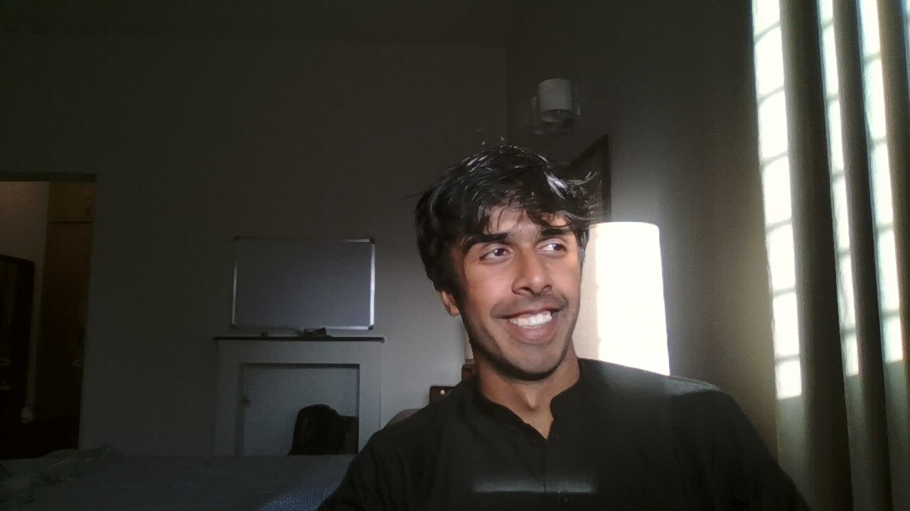

Yahya Khan

Summary
I am an ex-data scientist turned full-time web developer and am passionate about creating original, attractive, and flawless websites.
Education
Bachelor of Science, Data Science - FAST NUCES(2023-2027)
Work Experience
AI/ML Intern
- Accomplished the generation of high-quality datasets for Hazen.ai's AI-based ALPR engine, as measured by a 30% improvement in data accuracy, by developing a Python program utilizing OpenCV.
Skills
- HTML
- CSS
- C++
- Python
- React JS
- Public Speaking